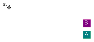
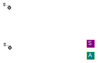
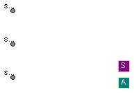

| Name | Description |
|---|---|
| Base Class for alternator group, configuration single-shaft (one generator) | |
| Base Class for alternator group, configuration double-shaft (two generator) | |
| Base Class for alternator group, configuration triple-shaft (three generator) |
 ThermoPower.PowerPlants.ElectricGeneratorGroup.Interfaces.SingleShaft
ThermoPower.PowerPlants.ElectricGeneratorGroup.Interfaces.SingleShaft
| Type | Name | Default | Description |
|---|---|---|---|
| Frequency | fn | 50 | Nominal frequency of the grid [Hz] |
| Power | Pn | Nominal power installed on the grid [W] | |
| Real | eta | 1 | Conversion efficiency of the electric generator |
| MomentOfInertia | J_shaft | 0 | Total inertia of the system [kg.m2] |
| Real | d_shaft | 0 | Damping constant of the shaft |
| AngularVelocity | omega_nom | 2*Modelica.Constants.pi*fn/2 | Nominal angular velocity of the shaft [rad/s] |
| Type | Name | Description |
|---|---|---|
| Flange_a | shaft | |
| Sensors | SensorsBus | |
| Actuators | ActuatorsBus |
partial model SingleShaft
"Base Class for alternator group, configuration single-shaft (one generator)"
parameter SI.Frequency fn=50 "Nominal frequency of the grid";
parameter SI.Power Pn "Nominal power installed on the grid";
parameter Real eta=1 "Conversion efficiency of the electric generator";
parameter SI.MomentOfInertia J_shaft=0 "Total inertia of the system";
parameter Real d_shaft=0 "Damping constant of the shaft";
parameter SI.AngularVelocity omega_nom=2*Modelica.Constants.pi*fn/2
"Nominal angular velocity of the shaft";
Modelica.Mechanics.Rotational.Interfaces.Flange_a shaft;
Buses.Sensors SensorsBus;
Buses.Actuators ActuatorsBus;
end SingleShaft;

| Type | Name | Default | Description |
|---|---|---|---|
| Frequency | fn | 50 | Nominal frequency of the grid [Hz] |
| Power | Pn | Nominal power installed on the grid [W] | |
| Generator-Shaft A | |||
| Real | eta_A | 1 | Conversion efficiency of the electric generator |
| MomentOfInertia | J_shaft_A | 0 | Total inertia of the steam turbogenerator [kg.m2] |
| Real | d_shaft_A | 0 | Damping constant of the shaft |
| AngularVelocity | omega_nom_A | 2*Modelica.Constants.pi*fn/2 | Nominal angular velocity of the shaft [rad/s] |
| Generator-Shaft B | |||
| Real | eta_B | 1 | Conversion efficiency of the electric generator |
| MomentOfInertia | J_shaft_B | 0 | Total inertia of the steam turbogenerator [kg.m2] |
| Real | d_shaft_B | 0 | Damping constant of the shaft |
| AngularVelocity | omega_nom_B | 2*Modelica.Constants.pi*fn/2 | Nominal angular velocity of the shaft [rad/s] |
| Type | Name | Description |
|---|---|---|
| Flange_a | shaft_B | |
| Flange_a | shaft_A | |
| Sensors | SensorsBus | |
| Actuators | ActuatorsBus |
partial model DoubleShaft
"Base Class for alternator group, configuration double-shaft (two generator)"
//grid
parameter SI.Frequency fn=50 "Nominal frequency of the grid";
parameter SI.Power Pn "Nominal power installed on the grid";
//generators
parameter Real eta_A=1 "Conversion efficiency of the electric generator";
parameter Real eta_B=1 "Conversion efficiency of the electric generator";
//other parameter
parameter SI.MomentOfInertia J_shaft_A=0
"Total inertia of the steam turbogenerator";
parameter Real d_shaft_A=0 "Damping constant of the shaft";
parameter SI.AngularVelocity omega_nom_A=2*Modelica.Constants.pi*fn/2
"Nominal angular velocity of the shaft";
parameter SI.MomentOfInertia J_shaft_B=0
"Total inertia of the steam turbogenerator";
parameter Real d_shaft_B=0 "Damping constant of the shaft";
parameter SI.AngularVelocity omega_nom_B=2*Modelica.Constants.pi*fn/2
"Nominal angular velocity of the shaft";
Modelica.Mechanics.Rotational.Interfaces.Flange_a shaft_B;
Modelica.Mechanics.Rotational.Interfaces.Flange_a shaft_A;
Buses.Sensors SensorsBus;
Buses.Actuators ActuatorsBus;
end DoubleShaft;

| Type | Name | Default | Description |
|---|---|---|---|
| Frequency | fn | 50 | Nominal frequency of the grid [Hz] |
| Power | Pn | Nominal power installed on the grid [W] | |
| Generator-Shaft A | |||
| Real | eta_A | 1 | Conversion efficiency of the electric generator |
| MomentOfInertia | J_shaft_A | 0 | Total inertia of the steam turbogenerator [kg.m2] |
| Real | d_shaft_A | 0 | Damping constant of the shaft |
| AngularVelocity | omega_nom_A | 2*Modelica.Constants.pi*fn/2 | Nominal angular velocity of the shaft [rad/s] |
| Generator-Shaft B | |||
| Real | eta_B | 1 | Conversion efficiency of the electric generator |
| MomentOfInertia | J_shaft_B | 0 | Total inertia of the steam turbogenerator [kg.m2] |
| Real | d_shaft_B | 0 | Damping constant of the shaft |
| AngularVelocity | omega_nom_B | 2*Modelica.Constants.pi*fn/2 | Nominal angular velocity of the shaft [rad/s] |
| Generator-Shaft C | |||
| Real | eta_C | 1 | Conversion efficiency of the electric generator |
| MomentOfInertia | J_shaft_C | 0 | Total inertia of the steam turbogenerator [kg.m2] |
| Real | d_shaft_C | 0 | Damping constant of the shaft |
| AngularVelocity | omega_nom_C | 2*Modelica.Constants.pi*fn/2 | Nominal angular velocity of the shaft [rad/s] |
| Type | Name | Description |
|---|---|---|
| Flange_a | shaft_B | |
| Flange_a | shaft_A | |
| Flange_a | shaft_C | |
| Sensors | SensorsBus | |
| Actuators | ActuatorsBus |
partial model TripleShaft
"Base Class for alternator group, configuration triple-shaft (three generator)"
//grid
parameter SI.Frequency fn=50 "Nominal frequency of the grid";
parameter SI.Power Pn "Nominal power installed on the grid";
//generators
parameter Real eta_A=1 "Conversion efficiency of the electric generator";
parameter Real eta_B=1 "Conversion efficiency of the electric generator";
parameter Real eta_C=1 "Conversion efficiency of the electric generator";
//other parameter
parameter SI.MomentOfInertia J_shaft_A=0
"Total inertia of the steam turbogenerator";
parameter Real d_shaft_A=0 "Damping constant of the shaft";
parameter SI.AngularVelocity omega_nom_A=2*Modelica.Constants.pi*fn/2
"Nominal angular velocity of the shaft";
parameter SI.MomentOfInertia J_shaft_B=0
"Total inertia of the steam turbogenerator";
parameter Real d_shaft_B=0 "Damping constant of the shaft";
parameter SI.AngularVelocity omega_nom_B=2*Modelica.Constants.pi*fn/2
"Nominal angular velocity of the shaft";
parameter SI.MomentOfInertia J_shaft_C=0
"Total inertia of the steam turbogenerator";
parameter Real d_shaft_C=0 "Damping constant of the shaft";
parameter SI.AngularVelocity omega_nom_C=2*Modelica.Constants.pi*fn/2
"Nominal angular velocity of the shaft";
Modelica.Mechanics.Rotational.Interfaces.Flange_a shaft_B;
Modelica.Mechanics.Rotational.Interfaces.Flange_a shaft_A;
Modelica.Mechanics.Rotational.Interfaces.Flange_a shaft_C;
Buses.Sensors SensorsBus;
Buses.Actuators ActuatorsBus;
end TripleShaft;